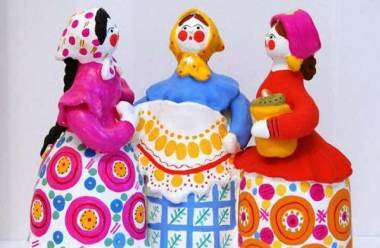
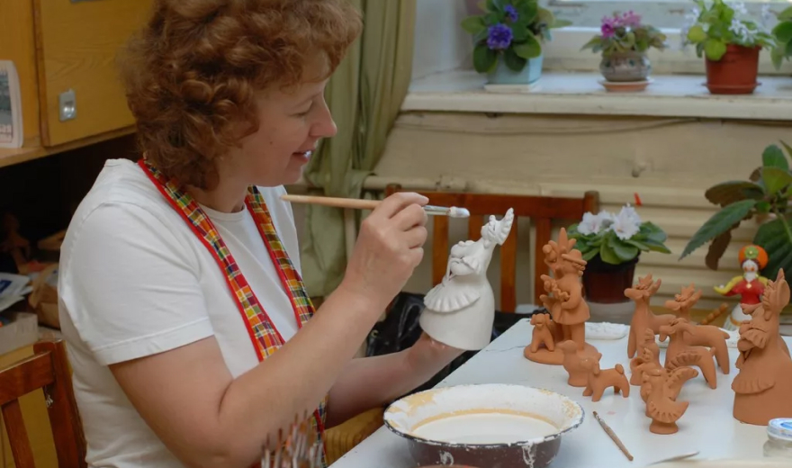
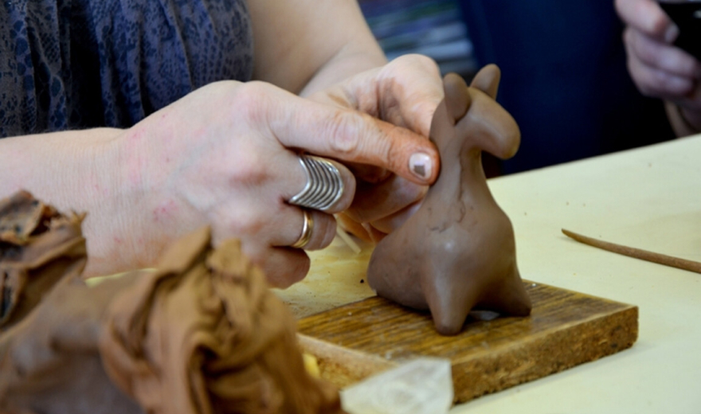
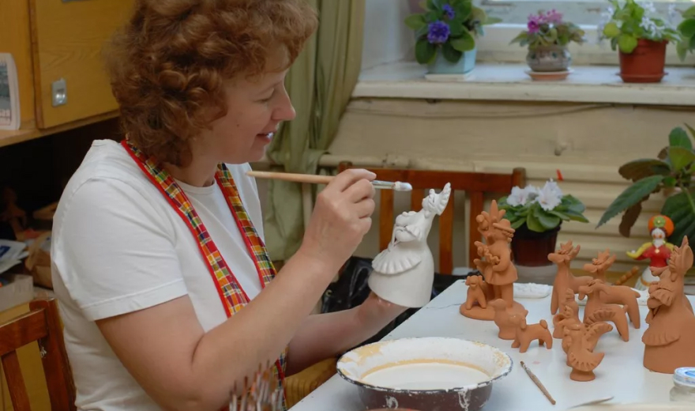
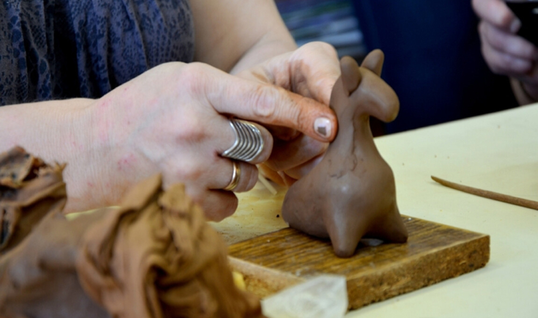

В день Ярила участники праздника перекидывались расписными шариками из глины и вовсю использовали глиняные свистульки. Именно это и стало причиной появления обрядовых аксессуаров, среди которых почетное место заняла дымковская игрушка.
Особенности
Дымковская игрушка — самый известный из глиняных промыслов России. Она отличается предельно простой, ясной пластической формой, обобщенностью силуэта, яркой орнаментной росписью по белому фону. В образах краснощеких барынь, кормилиц, лихих всадников, сценах чаепитий, ярмарочных гуляний, веселых каруселях — продолжают жить трехсотлетние традиции дымковского искусства, бережно сохраняется архаика древних образцов.
История
Четыреста лет развивался дымковский промысел. За это время сложились свои темы, образы, характерные рисунки. Тут не нашлось места невыразительным орнаментам или тусклым оттенкам. Дымковская игрушка — это воплощение жизни в самых радостных красках. Не удивительно, что к началу 19 века свистульки из Дымкова завоевали любовь жителей всей России. В год производилось больше 100 тысяч игрушек, которые продавались в столице и Оренбургской губернии. Над их созданием работали 59 семей из Дымково. Среди самых известных фамилий звучали Кошкины, Никулины.
Техника изготовления
Для создания фигурки используется глина и речной песок. По правилам, это должна быть вятская красная глина.
 



этап 1/4
Каждая деталь игрушки создается отдельно: из шарообразного комка глины формируется тело, на которое «собираются» остальные части (ножки, ручки, голова, аксессуары и т.д.). Все детали должны скрепляться с плавными переходами. Это помогает избегать сколов в будущем.
этап 2/4
Готовый образ сушиться на открытом воздухе несколько суток. Затем обжигается на огне. Раньше для этого использовали русскую печь. Сегодня — муфельную, где температура достигает 1000С.
этап 3/4
Когда заготовка остывает, ее отбеливают темперными красками. Наши предки для этой цели использовали молоко.
этап 4/4
На следующем этапе создания игрушки — раскраске, используются только чистые цвета без смешивания. В старину для этого брали естественные красители на основе яиц, молока, сажи, уксуса, темперы. Сегодня есть готовые акриловые краски. Главное требование: яркость и естественность. Обязательно использование золотой потали для отдельных деталей.